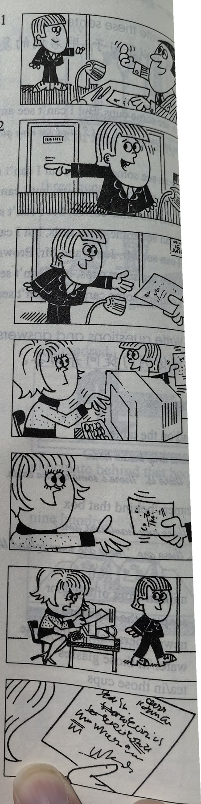

Lesson content · 课文
Lesson 45: The boss's letter · 老板的信
Listen then answer this question. 听录音，然后回答问题。
Why can’t Pamela type the letter?
帕梅拉为什么无法打信？
THE BOSS: Can you come here a minute please, Bob?
BOB: Yes, sir?
THE BOSS: Where’s Pamela?
BOB: She’s next door. She’s in her office, sir.
THE BOSS: Can she type this letter for me? Ask her please.
BOB: Yes, sir.
BOB: Can you type this letter for the boss please, Pamela?
PAMELA: Yes, of course I can.
BOB: Here you are.
PAMELA: Thank you, Bob.
PAMELA: Bob!
BOB: Yes? What’s the matter?
PAMELA: I can’t type this letter.
PAMELA: I can’t read it! The boss’s handwriting is terrible!

New words and expressions · 生词和短语
| Word · 单词 | Pronunciation · 音标 | Meaning · 词义 |
|---|---|---|
| can | /kæn/ | modal verb 能够 |
| boss | /bɒs/ | n. 老板，上司 |
| minute | /ˈmɪnɪt/ | n. 分（钟） |
| ask | /ɑːsk/ | v. 请求，要求 |
| handwriting | /ˈhændraɪtɪŋ/ | n. 书写 |
| terrible | /ˈterəbl/ | adj. 糟糕的，可怕的 |
Notes on the text · 课文注释
- Can you come here a minute please, Bob? 句中的 can 是情态动词，表示“能力”。情态动词的否定式由情态动词加 not 构成；疑问句中将情态动词置于句首，后接句子的主语和主要谓语动词。句中 a minute 作时间状语，当“一会儿”讲。
- next door，隔壁。
- boss’s，老板的。这种所有格的形式已在第11课的课文注释中讲过。请注意它的发音是 /ˈbɒsɪz/。
Chinese translation · 参考译文
老板：请你来一下好吗，鲍勃？
鲍勃：什么事，先生？
老板：帕梅拉在哪儿？
鲍勃：她在隔壁，在她的办公室里，先生。
老板：她能为我打一下这封信吗？请问问她。
鲍勃：好的，先生。
鲍勃：请你把这封信给老板打一下可以吗，帕梅拉？
帕梅拉：可以，当然可以。
鲍勃：给你。
帕梅拉：谢谢你，鲍勃。
帕梅拉：鲍勃！
鲍勃：怎么了？怎么回事？
帕梅拉：我打不了这封信。
帕梅拉：我看不懂这封信，老板的书写太糟糕了！
Practice · 课文练习
Understand the lesson · 课文理解
Comprehension · 理解题
Answer the question about the lesson text. 根据课文回答问题。
-
comprehension: Comprehension · 理解题 — Why can’t Pamela type the letter?
Practice worksheet · 配套练习
A. Dialogue
Read this dialogue. Fill in the missing words. 填空。
-
worksheet: A. Dialogue — Bob: ____ you type this letter for the ____, please?
You: Yes, of ____ I ____.
Bob: Here ____ are.
You: Thank you. — Oh, Bob!
Bob: Yes? What’s the ____?
You: I ____ type this ____. I ____ read it! The boss’s ____ is ____!
B. Prepositions of place
Choose: behind, over, in front of, in, under, out of, on, along, into, across, near. 选择恰当的词填空。
-
worksheet: B. Prepositions of place — Can you stand ____ the door? Then I can see you.
-
worksheet: B. Prepositions of place — Tim’s ____ the garden, but you can’t see him. He’s ____ the tree.
-
worksheet: B. Prepositions of place — There are some cups ____ the shelves ____ the kitchen.
-
worksheet: B. Prepositions of place — Bob is swimming ____ the river. His friend is walking ____ the bank.
-
worksheet: B. Prepositions of place — Where’s the tea? — It’s over there, ____ the teapot. Can you see it now?
-
worksheet: B. Prepositions of place — Where’s my newspaper? — It’s ____ the small table ____ the television.
-
worksheet: B. Prepositions of place — They are running ____ school. They aren’t going ____ the building.
-
worksheet: B. Prepositions of place — The men are standing ____ the bridge. They aren’t walking ____ it.
C. Numbers
Write these numbers in figures. 用阿拉伯数字表示以下数词。
-
worksheet: C. Numbers — five thousand, five hundred and ten
-
worksheet: C. Numbers — four hundred and fifty thousand
-
worksheet: C. Numbers — eight thousand
-
worksheet: C. Numbers — two hundred thousand
Grammar practice · 语法练习
I. Give short answers to the questions according to the examples
1.
- a. Can a dog swim?
Yes, it can.
- b. Can you bring me some books?
- c. Can we fly to Beijing?
- d. Can she write English?
- e. Can he cook?
- f. Can you see China on the map?
- g. Can Bob go to the United States?
- h. Can I turn off the television?
- i. Can Linda play football?
- j. Can you read English?
2.
- a. Can a cat swim?
No, it can't.
- b. Can we eat grass?
- c. Can birds swim under water?
- d. Can you buy a car now?
- e. Can your mother make cakes?
- f. Can your son cook?
- g. Can we make a cupboard?
- h. Can you answer the questions?
- i. Can he type?
- j. Can she dance?
3.
- a. Who can cut my hair? (the hairdresser)
The hairdresser can.
- b. Who can speak Korean? (I)
- c. Who can lift this stereo? (my brother)
- d. Who can read Japanese? (David)
- e. Who can speak German? (his friends)
- f. Who can translate this? (Xiao Li)
- g. Who can jump across the river? (he)
- h. Who can make biscuits? (her mother)
- i. Who can answer this question? (you)
- j. Who can paint the walls for us? (the men)
II. Write the sentences in a more polite way, using Can you ...? according to the example
- 1. Shut the windows!
Can you shut the windows, please?
- 2. Open the door!
- 3. Type these letters!
- 4. Turn off the light!
- 5. Make some cakes!
- 6. Give me the teapot!
- 7. Show me the letter!
- 8. Turn on the tap!
- 9. Wash the dishes!
- 10. Take off your shoes!
Your notes and answers
Use this space for longer responses or exercises that do not have an individual answer box.